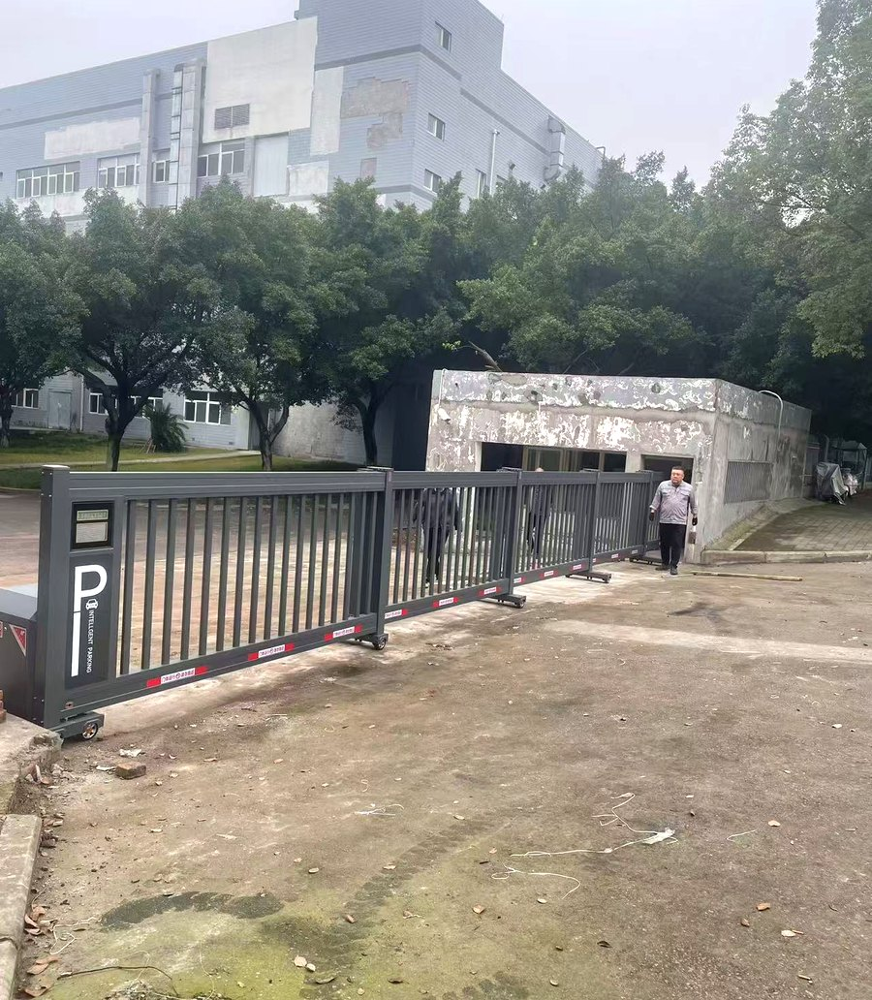

项目概况
| 客户 | 北大医药 |
|---|---|
| 行业 | 医药制造 |
| 门型 | 分段平移门（门口无地轨） |
| 应用场景 | 厂区入口 |
以下内容基于项目现场照片和已核实信息整理，不披露客户未公开的产量、数量和技术细节。
大跨度厂区入口，为什么要分段做
入口越宽，单扇门就越长：门体一长，自重、抗风和收拢后的停放长度都难兼顾。分段平移门把一樘门拆成几段，各段沿门体下沿的托轮在地面运行，收拢时逐段叠放，单段长度和重量都降下来，运行更稳，需要的停放空间也更短。
- 门体分多段拼装，单段自重小，运行更平稳
- 门口不铺轨道，地面保持完整，清扫车辆和行人不受地轨干扰
- 分段落位，收拢长度短，适合跨度大的厂区入口
- 门体下沿贴反光警示条，夜间车辆进出更容易识别门体位置
没有地轨，不等于没有安装要求
不用在门口开槽铺轨，但门体重量最终落在底部托轮上。托轮走过的位置要做基础处理，否则长期受力容易出现地面局部下沉、门体跑偏。两侧立柱和门体收拢区的平整度，同样影响运行的直线度。
门口没有轨道只是省掉了地面结构，安全配置一样不能省：运行限位、防撞、门体运行提示，以及停电后的手动释放，都要在安装阶段调好，并和门卫值守、车辆进出流程配合。
方案要点
- 确认入口净宽、车辆转弯半径和门体收拢后的停放位置
- 按门体分段数量和当地风压核算结构
- 托轮走行区域做基础处理，保证长期不沉降
- 配限位、防撞、反光警示与停电手动释放
- 调试运行，并与门卫值守、车辆进出管理流程衔接
现场照片

照片中可以看到门体分段落位与门口无轨道的关系。具体门体段数、长度和配置以项目资料为准。
常见问题
分段平移门和悬浮门怎么区分？
悬浮门靠立柱和托轮把门体整体悬空，门体离地运行；分段平移门是门体分多段、各段沿底部托轮在地面运行，收拢时逐段叠放。两种都不在门口铺地轨，区别在门体支承方式和收拢方式。
门口不铺地轨，地面会不会被压坏？
托轮把荷载集中在很小的接触面上，门体走行区域需要做基础处理。处理到位后日常使用不会明显下沉，清扫也比带地轨的门更方便。
跨度大的入口能不能只做一整扇？
可以，但单扇过长会带来自重、抗风和收拢停放空间的负担。分段做通常更省停放长度、也更便于分段检修，具体要看入口净宽和现场条件。
说明：案例信息以项目资料为准；页面不使用客户未公开的产量、数量或评价。